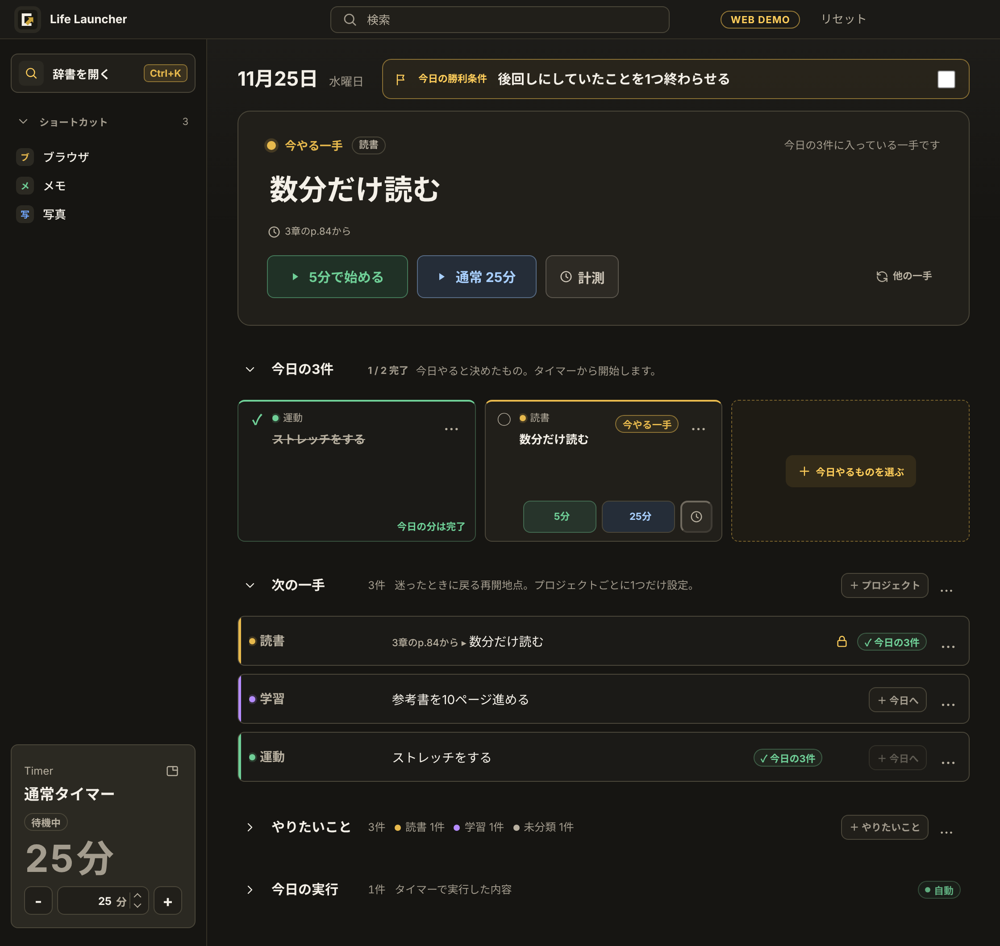

これは何か
Life Launcher は Windows のデスクトップアプリです。迷ったときに「今やる一手」を1つ示し、その作業に使うアプリやファイルを開いて、タイマーを始めます。
使い方
デモ
サンプルデータだけで安全に試せます。

試せる機能
| できること | デモ | Windows版 |
|---|---|---|
| 今やる一手・今日の3件・今日の勝利条件 | ||
| タイマー(5分・25分・延長)と実行の記録 | ||
| まとめて取り込む | ||
| 辞書 | ||
| アプリ・ファイル・URL を開く | 開く動きだけ | |
| 手順書ビューアー | — | |
| 記録・今週を決める | — | |
| データの保存先 | このブラウザの中 | この PC の中 |
デモはWindows版をすべて移したものではありません。
Windows 10 / 11 (x64) · WebView2 Runtime
最新版をダウンロード（GitHub Releases）インストーラー / 単体実行 EXE / ポータブル ZIP の 3 形式・SHA256SUMS 添付